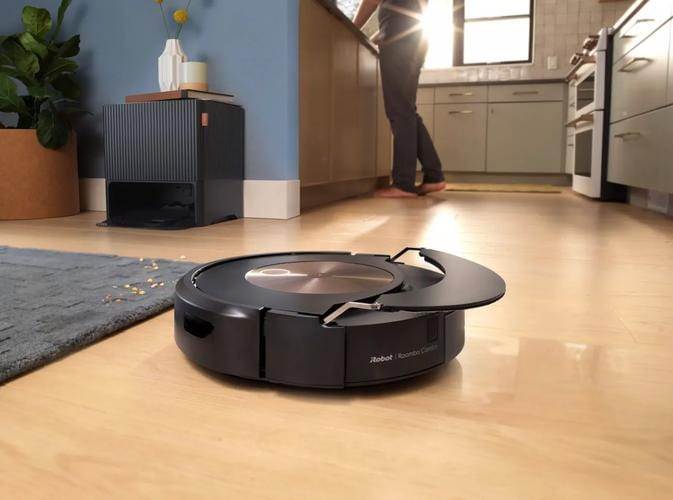

iRobot Roomba j9+

iRobot 旗舰纯扫机器人，主打双效橡胶胶刷的防缠绕与地毯清洁能力，配 Clean Base 自动集尘基站，可长时间免手动倒尘。不支持拖地，适合以地毯清洁与毛发处理为主的海外品牌偏好用户。
客观评测
Roomba j9+ 的核心是两根双效橡胶胶刷的对转结构，官方称吸力较 600 系列提升约百倍（未公布具体 Pa 值），实测对地毯碎屑与宠物毛发拾取稳定，胶刷结构几乎不缠绕毛发，维护频率远低于毛刷机型。vSLAM 视觉导航建图可用地面纹理定位，但昏暗环境下需要补光。Clean Base 自动集尘基站约 60 天更换集尘袋，尘袋更换过程卫生。该机为纯扫设计，无拖地模块，硬地板清洁深度有限。
主观点评
养猫家庭对它的评价会很高：胶刷上几乎见不到缠成一团的毛，倒尘袋两个月一次，全程不脏手。它扫得不快但很细，Dirt Detect 会在脏的地方反复打转。没有拖地功能确实可惜，木地板家庭还得搭配别的设备。价格在国内不算友好，更多是给认这个牌子、重视毛发清理的人准备的，讲究性价比的话国产全能机型更香。
优点与不足
- 双效橡胶胶刷几乎不缠毛发，养宠家庭省心
- 自动集尘基站成熟可靠，约两个月免倒尘
- 地毯识别增压，地毯清洁表现扎实
- 不支持拖地，硬地板深度清洁需另配拖地机
- 国内渠道价格偏高，性价比一般
参数规格
| 吸力 | 较 600 系列提升约 100 倍（官方表述，未公布 Pa） |
|---|---|
| 导航 | vSLAM 视觉导航 + 地面识别传感器 |
| 拖地 | 不支持拖地（Combo j9+ 版本支持） |
| 续航 | 约 75-90 分钟，支持断点续扫（约） |
| 集尘 | Clean Base 自动集尘，约 60 天更换集尘袋 |
| 噪音 | 约 60dB（约） |
| 防缠绕 | 双效橡胶胶刷，减少毛发缠绕 |
| 地毯识别 | 自动识别地毯并加大吸力 |
| 智能功能 | 污垢检测（Dirt Detect）、房间分区、定时清扫 |
| 生态 | 支持 Alexa / Google 语音助手，iRobot Home App |
| 避障 | 前置摄像头识别障碍物（约） |
| 越障 | 约 2cm（约） |